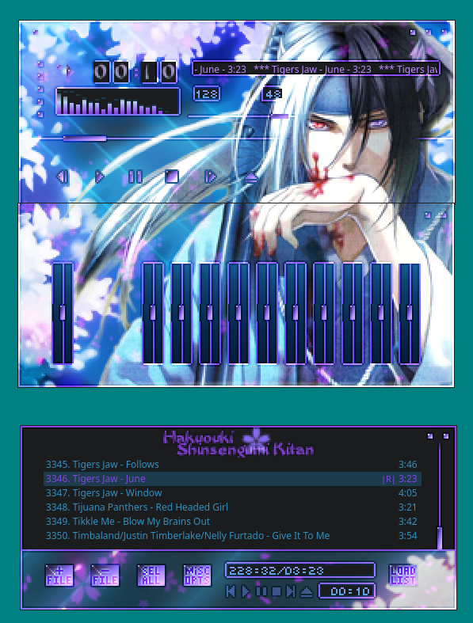
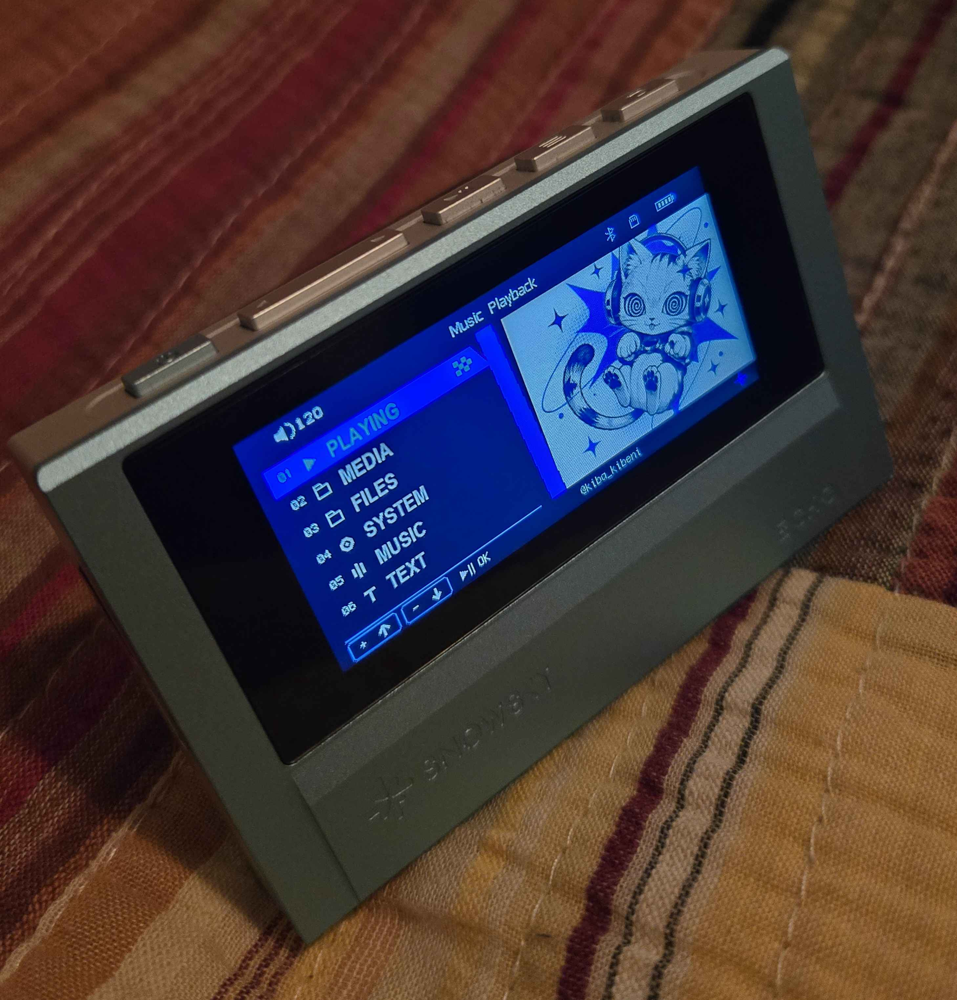
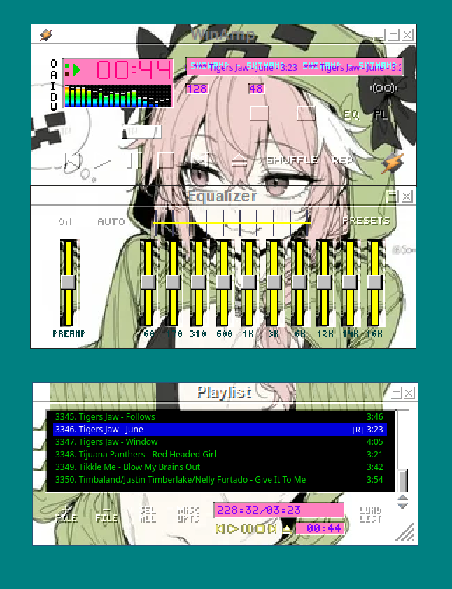

qmmp - [winamp dupe]
November 15, 2026
I recently tried out 'qmmp' which is a music player program built for linux. What makes it so cool is that it is fully compatible with all the old winamp skins. One of my earliest blog posts was about running winamp through wine. But it was a little bit janky to be honest. Especially on a wayland tiling compositor. qmmp runs like a charm and I am very happy with it. Having access to all the old skins from the 2000's is so much fun.

[side note: June by Tigers Jaw is soooo good I've had it on repeat all day]
It's been nice too because I recently bought an mp3 player rather than using spotify, so I've had all my music downloaded anyways.
The player I went with is the 'snowsky echo'. It is super cute, but the UI isnt the easiest to navigate. It is pretty simple to create and flash your own custom firmware though so that is also really nice.
You can edit the UI imagery and boot animation fairly simply. It supports m3u playlists as well. Has both sizes of audio jack and bluetooth as well.
And the aspect that really sold me on this model is the physical buttons instead of a touch screen.

I also still have all my music backed up on my server as well so I can still stream through jellyfin if I want. All in all it works pretty well. I use rsync to make sure everything stays synchronized for adding/deleting/editing songs etc.
